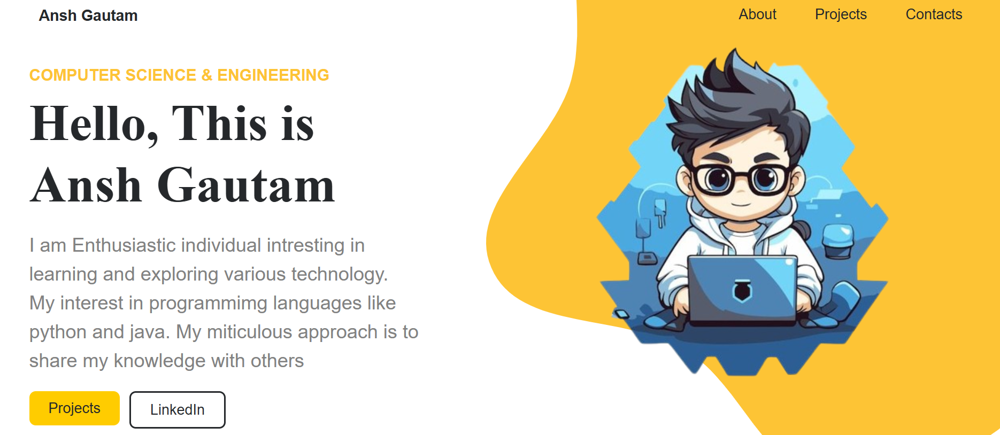
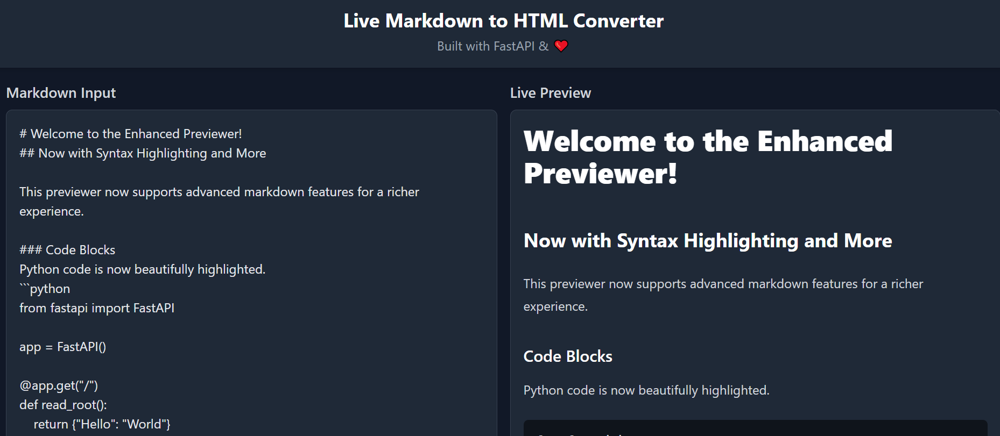

I am Enthusiastic individual intresting in learning and
exploring various technology. My interest in programmimg
languages like python and java. My miticulous approach is to
share my knowledge with others
I have developed my personal portfolio website to showcase my
journey and projects. This website serves as a testament to my
skills in web development, featuring an aesthetically pleasing
design and user-friendly interface. It highlights my academic
achievements, projects, and technical expertise in various
programming languages and tools. Through this portfolio, I aim to
demonstrate my commitment to continuous learning and innovation in
the field of web development.


Live Markdown Preview
The Live Markup Previewer is a real-time web application designed to convert Markdown text to HTML. This project showcases my proficiency in full-stack development by integrating a robust FastAPI backend with a modern, interactive frontend built using HTML, JavaScript, and Tailwind CSS. The application features live preview functionality, advanced Markdown support including syntax highlighting with Pygments, tables, and special admonition blocks. This project highlights my ability to create a responsive, feature-rich web tool.